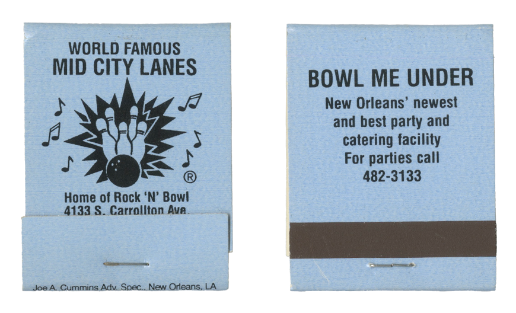
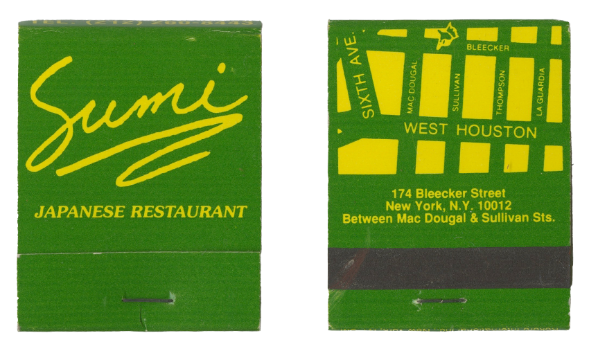
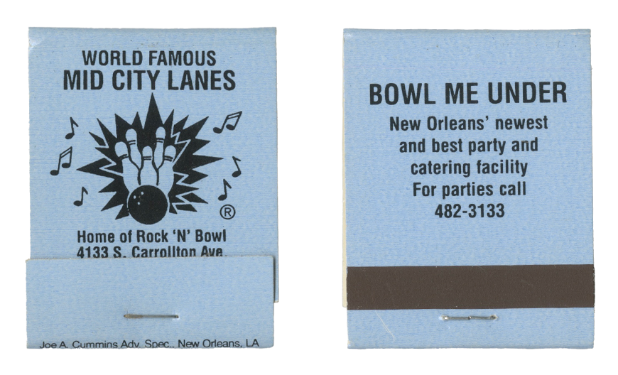
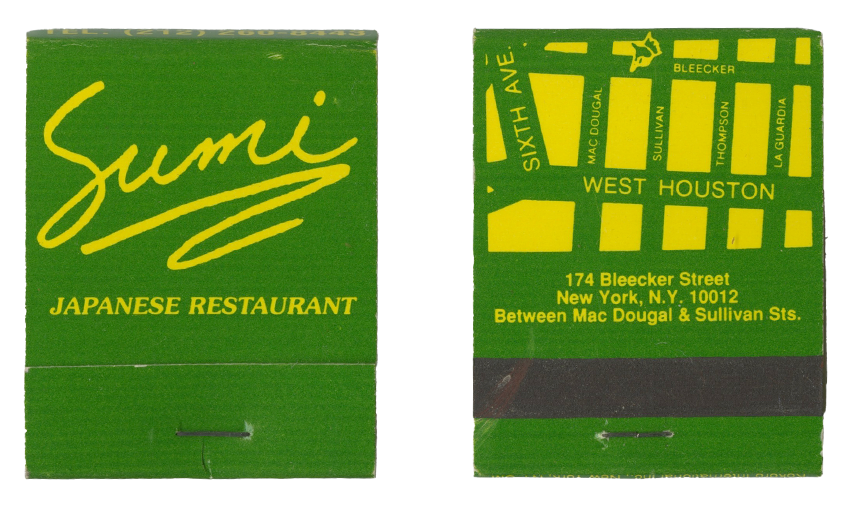

A New Old Freebie: Restaurant Matches Return
by Katrina Heron
Greg Lund is a collector. He learned the art at the age of 11, through a neighbor who collected all manner of ephemera in the 1960s: coins, stamps, Coca-Cola memorabilia, and — most influential to Lund - matchbooks. The ease of collecting those cardboard rectangles proved attractive for the then-budding matchcover collector. At that time matchbooks were abundant, a form of advertising for nearly every kind of business under the sun including not only restaurants and bars, but also car dealers, hospitals, airlines, and dry cleaners. A lifelong hobby sparked, today Lund has amassed a collection of about 200,000 matchbook covers. He stores his collection in 400 albums, all meticulously documented, with 10 dedicated exclusively to San Francisco restaurants and bars. He’s a prolific eBay seller, offloading huge lots to other serious collectors. He’s in the more lucrative circles of collecting but also intimately understands the nostalgic allure of casually collected matchbooks.
“Part of the appeal was that people pick them up in their travels or when they go out to eat,” Lund says. “I have a lot of San Leandro ones because I remember a lot of these places when I was a kid. They bring back memories, but they don’t have any monetary value — but they’re fun, you know?”
Today, matchbooks don’t have nearly the widespread popularity they once did, but some modern restaurants hold strong to the tradition. They’re making the case for matchbooks as both a takeaway and a worthy expense for restaurant and bar owners. While it still serves as an obvious advertisement for the business, it also fulfills other sensibilities as well: a memory placeholder of sorts; a tactile object that becomes rooted to a specific time and place such as a (hopefully) memorable meal, a faraway trip, or a moment with a friend or partner over drinks. I’s also a record-keeper for restaurants. Long after the doors have closed on a beloved spot, a matchbook might be the last physical reminder of a place that isn’t part of recent, collective history. Restaurant spaces turn over, as they are wont to do, but holding the matchbook in your hand can rekindle some of that magic. In looking through his matchcover collection, Lund goes on a trip through his memory lane of restaurants, recalling places where his father worked. In its overly romantic way, the matchbook has transportive properties that serve a purpose beyond lighting a single flame.
The invention of the match dates back to 1826 when John Walker, a chemist in England, created the “friction” match. He found that combustible paste made of phosphorus could catch on fire merely through friction. By 1827 he was selling “friction lights” made of pasteboard dipped in the flammable substance.
But the match became instantly more useful — and portable — with advancements from Philadelphia patent attorney Joshua Pusey. He created a compact, folded piece of cardboard that housed matches inside. He’s largely credited with inventing the matchbook, patenting the product in 1892 as the “flexible match.” The book Close Cover Before Striking: The Golden Age of Matchbook Art states that Pusey wound up selling his patent to the Diamond Match Company; he ultimately became the company’s in-house patent attorney.
Matchbooks transformed into a mode of advertising in 1902, thanks to a salesman at Diamond Match Company. An opera company in New York City successfully promoted a performance with an illustrated matchcover, and inspired Diamond salesman Henry C. Traute to introduce the idea of matchbook advertising to Pabst Brewing Company in Milwaukee, which they agreed to, kicking off a new era for the humble lighting implement.
Other companies followed suit, including Bull Durham Tobacco and chewing gum-maker Wrigley. Traute is also credited with moving the striker to the exterior of matchbooks, as well as convincing companies to give away matchbooks for free. The format of matchbooks has largely stayed the same since then, except for a 1973 federal safety law that required manufacturers to place the striker on the back of the matchbook rather than the front.
But there’s a lot of thought that goes into creating a truly memorable, pocketable piece of restaurant memorabilia. Johnna Quinn is director of creative services at Carbonate, a communications and brand consulting agency geared toward the hospitality industry. Quinn is involved in designing marketing materials for businesses down to the tiniest details, which also includes matchbooks. It’s all in consideration of what she calls “touch points” - physical manifestations of the experience diners have at a restaurant.
The personal touches go beyond just slapping a logo on any business card, postcard, or matchbook, she says. “We really want every piece to feel super personal,” Quinn says. “We want [diners] to look at that and feel like, ‘Wow, they considered every single little thing, and we want that to be echoed through their whole experience.”
Quinn works with restaurateurs through rounds of design revisions and color choices, especially since most matchbooks have an ordering minimum, typically 10,000 pieces costing anywhere from $400 to $2,500 for more complex designs and printing methods. With a background in printmaking, Quinn says she has a very hands-on approach to her work, considering everything down to the texture of paper or cardstock.
For her, matchbooks are a fun, tangible part of dining at a restaurant packed with charm and nostalgia. Quinn packs as much personality as possible into each small canvas, sometimes with a joke or funny illustration. A matchbook made for Petite Left Bank in Tiburon, for instance, features a cartoon pig drinking Champagne with a jaunty “Let’s French!” proclamation across the top, just one of a few cartoon pigs drawn for the restaurant, with joie de vivre to spare. “We think that they are really fun” Quinn says, “and especially with an opening, it is one of those pieces that people collect. It’s a great way to have that word of mouth spread, and once somebody sees it at somebody’s house or out and about, it’s like, ‘Oh, what’s that? Where did you get that?’ We think of them as these little mini marketing pieces that can travel and spread like little bread crumbs.”
Laura Kwan-Rosenbush deeply believes in the marketing power of a matchbook. “There is such a legacy in restaurant matchbooks,” says Kwan-Rosenbush, director of marketing and communications at Back of the House, Inc., the group behind San Francisco restaurants Super Duper, Beretta, Tailor’s Son, and the recently-opened Corzetti. “I think having that very clear takeaway piece to remind guests about their experience, from my standpoint, is just really fun and important. As a collector myself, I love looking back on places through the matchbooks.”
In a brand refresh for Tailor’s Son, Kwan-Rosenbush thought it would be a perfect match (no pun intended) to work with New Jersey-based boutique matchbook maker the Match Group to bring a design to reality. The logo for Tailor’s Son– a charming, retro cartoon drawing of a man eating spaghetti, or, sometimes, drinking a martini– hearkens back to the original logo for owner Adriano Paganini’s parent’s tailor shop. The design now lives as a cartoon that spans the face of the restaurant’s matchbooks, separating into individual matches with a drawing on each stick, a whimsical detail.
Foreign Cinema co-owner and chef Gayle Pirie is also keeping the matchbook flames burning. Her restaurant continues to print matchbooks, and also collects vintage matchbooks. “They possess a penultimate design element in small form,” Pirie says. The restaurant’s matchbook is a callout for the movies Foreign Cinema is known for showing in their courtyard. It currently features artistic renditions of classic film stills on the cover. “They are romantic, Pirie says, “and our design reflects our commitment to love, and iconic film presence celebrating Fellini and his film, Roma.”
While some diners may save a menu or a coaster for sentimentality, Kwan-Rosenbush looks at matchbooks as a much more useful sort of restaurant memento. “For me, I think pens and matchbooks are two things anybody can use,” she says. “Even though there’s that connotation with smoking, I use mine to light candles. They’re very handy.”
 


